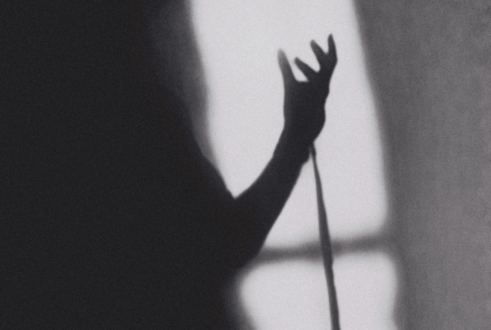

The Rahil Static Story
Personal Project (2022)
Part 2: To Those Who Inspired...
Part 3: Inadequacy & Finding Yourself
Part 4: A Change In Perspective
Preface
Born and raised in a city known for its fast-paced lifestyle, I have always felt static. Between being stuck in the glory days of the past and feeling anxious about the future, the present becomes non-existent. Writing this story down is my outlet to make peace with myself, close a chapter in my story that started back in college, and move on with a renewed perspective.
Somewhere, for someone, and in sometime, these words will be my contribution to keeping the light on. What does that exactly mean ? I'll tell you, but I will also leave it a bit ambiguous.
Interpretation is an art, and over explaining something is robbing the artist (that's you, the reader) of that privilege. All of this might mean nothing to some, but it is everything to me.
So let's just talk; you can pick up the pieces as we go along.
Part 1: The Protagonist
The last time I was on stage was back in 2019.
School, and even in college I found myself frequently on stage. I was hosting events, entertaining the crowds, keeping them interested, and announcing the next act that would follow. It all feels surreal in that moment, hundreds of people in attendance all listening to what you have to say, making you feel like the main character of some dreamy movie.
It is the next day when reality hits, when you are back home with few people around you, your mind craves for the dopamine hit you got when you were on stage, it desperately wants to relive that moment again, and it does. Like a broken record, images of that time keep playing on loop, and it takes at least a week of normalcy to convince yourself that life isn't this dreamy movie you keep thinking it is. Even after all that, every now and then I would still crave the stage, for a multitude of reasons, one, because that platform makes you more confident, you make mistakes, fumble words, get nervous. Ultimately, the show needs to go on, so you keep moving on ahead. This act of not staying stuck with your mistakes and refusing to let those define your entire performance is exactly what I love about it.
Two, (and maybe I hate to admit this) I wanted to be on stage for validation. Crowds chanting your name, their cheers justifying your performance, the thrill, the adrenaline rush, the post-event praise you get from peers and audience members. I lived for that. The stage always made me feel special, like a star, the protagonist.
Soon college would end, then right after Covid happened and my connection with the stage was all gone. (With time, my perspective about it has also changed, but we will get to that later.)
You start seeing your friends get jobs and earn money, which eventually forces you to follow suit without properly analyzing what YOU really want to do.
Which raises the question “Are we all the most authentic versions of ourselves, or just mindless chasing machines ? Are the dreams we are trying to pursue, really our own or just something we accepted as ours ?”
Clearly the answer lies in deep self-reflection. Your mind plays this game with you where it cherished certain past experiences and demands that you should chase after them, in my opinion that will lead to more emptiness. You see what worked previously might not work today, with time your preferences, feelings, thoughts change… because you change.
As a graduate in information technology, I would have been incredibly dissatisfied if I had continued to pursue coding as a profession, which while it looked superficially fascinating, once I started working in that realm, it didn't really mean much. I didn't like it, and while it was paying well, it felt like I was compromising a part of myself in the process. You see, that's the issue, sometimes we make decisions based on the monetary value attached to them; we select our professions thinking that they will give us the most money when in reality, money is a tangible resource, and in this day and age, with the right idea, you can monetize anything. So why not do that with something you love ? If at that time I would have listened to my mind and carried on, just because a younger Rahil was excited about a profession he wasn't passionate about anymore, I would have fallen into a trap.
When one door closes, pay close attention, God is always creating better opportunities for you; it is on us to stay attentive and not be so attached to what used to work. And really I could use this advice too, because even though these are my own words, sometimes I too falter in following them. (Because just like you, I am also a human, and I am not perfect either)
Coding didn't exactly work out for me, at least not professionally. I still code from time to time, but only for my personal projects, like this website. So, all of that wasn't exactly a waste. I also met a lot of talented people and made a lot of friends in college. There also came a realization that there was one profession still out there, perfect for my artistic expression, filled with limitless possibilities, and one that I would enjoy doing on a day-to-day basis. I experimented for a while, then narrowed down on one…
First quarter of 2021, I got into UI/UX designing.
Part 2: To Those Who Inspired
You always need someone who sets off that initial spark in you; for me it was Dave Chenell. If you actually look at his work, it is drastically different from mine, because he isn't a UI/UX (User Interface/User Experience) designer. He defines himself as a computer artist with his work being mainly focused on illustrations and 3d motion, which he is absolutely phenomenal at. Currently, he is working on developing his own virtual reality game. The reason why Dave’s work stood out to me was because you can clearly tell that he has developed his own style, he is following his own artistic authenticity, which in turn conveyed to me that I could also make a living if I followed mine.
From there I just started experimenting. I downloaded design software and made whatever my heart desired; this eventually (through a long process, which we will discuss later) led me to create a portfolio of personal projects which started a small freelancing gig. By God's grace, I finally found a new direction, a place where my artistic and professional ambitions could meet to create something that felt meaningful. While Dave ignited the initial spark, there were others who kept the flames ignited.
Tom Strekowski - an extremely talented designer, who knows exactly how to convey a brand’s personality through the design. A pure artist, his own portfolio website is a mixture of poetic writing and incredible aesthetics. He has the ‘eye of a designer’, he knows through pure intuition what should go where and what doesn’t belong; pure artistic instinct, when you are this honest with yourself, your only competition is you.
Switching gears, I also need to mention my good friend, Neel Sagar. Again, we have different professions, but Neel is someone who I consider to be a proficient front-end developer. Whenever, I need help regarding coding for my personal web-related projects, he is the guy who’s just a message away. He was also the first person who gave me constructive feedback on the website that you are currently viewing.
If these three individuals (two of whom I have never met or seen) stumble upon these words, I want to sincerely and humbly say - Thank you, thank you for being yourself and inspiring me to find myself too.
Thank you… for keeping the light on.
Part 3: Inadequacy & Finding Yourself
Getting inspired is a start; the real challenge comes when you get down to execution. They say consistency keeps you going, that’s true, but for me it was also inadequacy. Acknowledging that your work is currently not at the level it has the potential to reach has kept me going, and it has also created a ton of added pressure. It is a lot easier to say that I accomplished x or y, but to describe the process of getting there is very difficult. To say that a few people inspired me to find myself is simple and straightforward, but it didn’t really happen overnight.
When I first got inspired by Dave’s work, my initial intention was to imitate his style, just so that I could analyze whether I possessed the skills of pursuing that profession. I soon realized however, that the whole process didn’t feel natural and that I was being unfair to myself. Dave has years of experience under his belt, meanwhile I was just starting out, it definitely took him a while to get a hang of things and that will hold true for me too. You can’t rush the learning curve and Dave’s work was drastically different from what I ended up doing anyways. But testing it out and seeing that I wasn’t skilled in that area only meant I was good at something else; so this whole journey of trial and error to see what works for you is important, even though it may be frustrating.
What came after that wasn’t exactly easy either; my freelancing gig was fruitful, but I clearly needed a more organized system with a chance to work with other designers to get better at this thing. That’s when I started searching for a job while delivering a few small scale projects here and there. I got rejected a lot during my job search, and I was naive enough to let that get to me. I thought again that I was inadequate, talentless, and this time that feeling wasn’t helping me push further, this time around it was holding me down. It also didn’t help that almost all of my friends were already a year and a half into their respective jobs, while I had to go through that figuring out process. While that time is a bit blurry, one thing I knew for sure, I loved making designs, I had no doubt that even if I couldn’t get a job in this realm now, one day I would.
I didn’t have to wait long. I got employed on 8th September 2021 by a startup and the environment was exactly what I needed to get better.
You know, I wished during this time people would just say “Rahil, you are doing great, keep it up.” But the people around me almost always made it a point to emphasize (either implicitly or explicitly) that “Rahil, you could be doing better.” This is the worst thing to say to someone who is already trying his best; please realize that when the timing isn’t right, it simply isn’t right. We live in a world where comparison is so natural and we are so impatient for more money and more materialistic possessions that we would rather fast forward the time to get there, instead of cherishing the journey that would get us there. And I am asking something even deeper than that - “What exactly do we do when we get there ? Is attaining all that money the end goal of it all ?” cause if that was the case maybe I shouldn’t have left coding, I would be making more money even if I didn’t like that work, but personal satisfaction wouldn’t matter if money was the only priority right ?
I think we all should come up with our own definition of success and leave behind the one set by social media, but to do that you need to understand yourself properly. I believe that you can only truly find yourself in a vacuum, surrounded and aware of only your genuine thoughts and feelings.
Listen to that voice inside of you, but first make sure that the voice is actually yours.
Part 4: A Change In Perspective
The last time I was on stage was in 2019, but now the world is my stage.
Through this new found artform of designing I continue to express myself and tell my story, in hopes that maybe one day these words will keep the light on for someone else.
While my love for the stage will never go away, I am no longer seeking the validation that once I was so desperate for. I have come to realize the stage won't always be there; the people won't always sing your praises, but as long as you are happy with the person you see in the mirror, nothing else matters.
I also thought about it all from a different perspective, when I was on stage; to me it always felt like I was the main character, the protagonist. But whether conscious about it or not, the audience were the real stars of each and every show; without them my presence on stage wasn’t justified, and the words I spoke into the microphone would only disappear into thin air, landing on no one’s ears. It is when the people fill the seats that the entire act is contextualized, then it makes sense, this temporary ‘event-to-event’ relationship with them really is a two-way street. I am supposed to make them feel like stars and they end up making me feel like I am one too.
The same can be said for the creative minds who inspired me. I can sing their praises all day and in a sense make them feel special for inspiring me, but what about the fact that I also felt special due to their work ? That for once in my life I felt like I had something valuable to contribute; that I too had a talent that could be put on display. This is the purest form of self-validation, because it makes you look inward to reflect upon what you are really good at and finally realize that you are not insignificant, not because somebody else had to say that to you. But because now you yourself know.
In this way the cycle continues, a generation of artists inspired me to find myself, that led me to create my own art that will one day, hopefully, God willing, inspire the next.
I will play my role; you will play yours, and in turn we will keep the light on for everyone involved.
Part 5: Rahil Static
"Don’t let either the past hold you back, or the future make you feel anxious.
Know your worth, believe in it.
Create self assurance to remove your doubts, a process to shed your skin.
Born anew, you can begin again."
- Rahil Static
This entire story has been playing in my mind for a long time, and the suffix ‘Static’ attached to my name is accurate. I have been unable to move on, stuck as the same college kid who was directionless about his career, who saw his friends get a job before him and had to deal with comparisons from both internal and external sources. I added a ton of pressure to my own self, created a conflict within me, and have since fought hard to resolve it. Writing all this history down is me making peace with myself; it is me acknowledging that everyone is on their own journey; that I am simply doing my best with the cards that I have been presented with.
I added Static to my name to remind myself that there is no point in being stuck between the past and the future. I won’t grow in this space and will never realize my full potential. Rahil Static needs to exist so that Rahil Hussain can thrive. They both co-exist and drive each other. I am different from who I was yesterday, but even in this place I can’t stay stuck; there is a lot more to learn and a lot more to achieve in terms of both personal and professional goals. All of this doesn’t mean that I am in a constant state of dissatisfaction; on the contrary, I am happy with the man I see in the mirror; but I am also aware that I am not there yet. It is a delicate balance of feeling content and being at peace with where you are, but also energetic and excited about what’s next.
I will leave you with this final message… a belief and a motive.
I believe we should strive for greatness. Greatness that isn't defined by money, fame, and all other temporary, vanity-driven pursuits.
The real greatness is making the best out of all the opportunities presented to us, it is about the quiet moments when nobody is watching, it is about having the courage to dream and sacrifice your personal pleasures for the same, it is about helping people find their true self.
You see, my job isn't to inspire others to be like me; that would be foolish.
My job is to create the blueprint that inspires people to be more like themselves so that they can achieve their own individual greatness.
That is the Rahil Static Story.
Realized.
Written By:
Rahil H.
Shirt Design:
Rahil H.
Director of Photography:
Rahil H.
Photography:
Rahil H., Neel Sagar, Ronit Bainipal
Those Who Inspired:
Dave Chenell, Tom Strekowski, Neel Sagar
Special Thanks:
Vishal Uchil (For literally lending his hand),
Jaimeen Fumakiya (For hearing my ideas when they were at the infancy stage),
You, dear reader. Thank you or your time and giving this story a read.
The Beauty of Closure.
Finishing one chapter should only excite you to write the next one.
And so it continues...
In time I shall return with another set of stories; and if our bond is strong enough, I know you will be around to receive them.
- Rahil H. / Rahil Static
© Rahil H. / Rahil Static 2022
← Other Works | Rahil City →